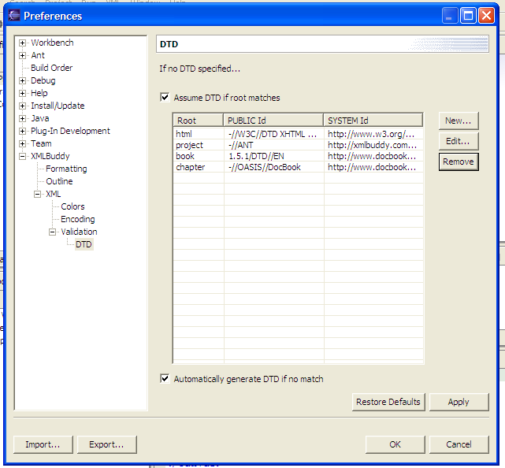
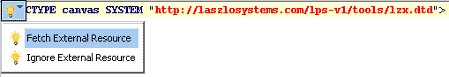
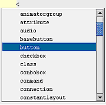
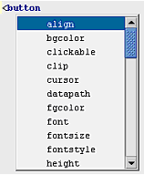

LZX source files are text files. A standard text editor such as Notepad (on Windows) or TextEdit (on MacOS) can be used to edit them.
LZX source files are a particular type of text file: they are XML
files. An XML-aware editor such as Eclipse, BBEdit,
or Emacs
(with psgml-mode
or nxml-mode)
will provide additional editing facilities such as automatic
indentation, syntax highlighting (coloring markup characters such as
< and tag names such as < or quotation mark).
To configure an XML-aware editor to edit lzx files, it must be
configured to edit these files in XML mode. This is done by
registering the lzx extension with the XML mode of the
editor. How to do this depends on the exact editor; this chapter
gives instructions for some popular editors.
An XML schema lists the tag and attribute names that can occur within an XML document. Many XML editing tools are schema-aware. These tools can associate an XML document with a schema file, and use the schema file for code completion (to complete a tag or attribute name, or suggest a list of valid attribute values) and validation (to indicate invalid tag or attribute names within the editor, so that you don't have to wait until you compile the file).
The method for associating an XML document with a schema file depends on the editor. This chapter gives instructions for some popular editors.
There are three types of schemas in popular use: DTDs, XSD, and RNG (and its associated format RNC). The LZX schema is distributed in each of these formats. They can be found in the lps/tools directory.
A Document Type Definition (DTD) is the oldest type, and
is recognized by the most editors. Unfortunately, the DTD format is
very weak compared with the other schema description languages, and
can't indicate certain contextual information such as that a
W3 and OASIS are standards bodies. The W3 standard for describing XML documents is the XML Schema Definition (XSD). The OASIS standard is RELAXNG. RNG and RNC files are RELAXNG files that contain schema definitions. RNG files are in XML; RNC files are intended to be human-readable.
Eclipse in an open source development environment created and maintained by IBM. You can use different "Eclipse plugins" to develop LZX programs.
IDE for Laszlo is an Eclipse-based development environment for creating, editing, debugging, and testing applications based on the LZXdeclarative mark-up language. This technology is part of the Emerging Technologies Toolkit (ETTK), a special collection of emerging technologies from IBM's software development and research labs.
The IDE consists of a set of plug-ins that allow creation and testing of Laszlo applications, all within the Eclipse platform. These applications can then be deployed and run on a Web server. IDE for Laszlo also provides a rich editing environment for the LZX mark-up language. Its editing features include XML- and script-based content assistance, XML syntax highlighting, and XML code formatting.
In addition, IDE for Laszlo allows you to preview the resulting application without deployment, within the Eclipse environment. It supports markers for reflecting compilation and syntactical errors. When development is complete, the applications created can then be deployed and run.
The editor is also supported by a set of views:
The development environment's debugging capabilities include:
There are four steps to using Eclipse with XMLBuddy
Step 1: Download Eclipse
Step 2: Download XMLBuddy, an XML plugin for Eclipse
Download XMLBuddy from http://www.xmlbuddy.com. Get the right version for your Eclipse.
Installation is simple. After you unzip XMLBuddy, just drag the folder into your eclipse/plugins folder.
Step 3: Configure Eclipse to use XMLBuddy for
*.lzx files
In Eclipse:
*.lzxStep 4: Configure XMLBuddy to use the LZX schema for canvas files
Root Name: canvas
PUBLIC Id: -//Laszlo Systems, Inc.//DTD LZX 2003/05//EN
SYSTEM Id: http://www.laszlosystems.com/lps/tools/lzx.dtd
library files
Repeat steps (4-5), but with a Root Name of "library".
For GNUEmacs, an XML mode that understands RELAX-NG schemas at http://www.thaiopensource.com/download/ and a discussion group for this package at http://groups.yahoo.com/group/emacs-nxml-mode/.
The lzx.el file tells emacs to recognize
*.lzx files as XML files. With the DTD, this
provides syntax-directed editing and validation of XML entities in LZX
files.
If mmm-mode is installed, this file will also create an mmm submode
to recognize the content of *.lzx files. This provides
syntax coloring and intelligent indentation and navigation for
Javascript code within LZX files.
Copy lzx.el into a directory on the load-path, optionally byte-compile it (using M-x byte-compile-file), and place the following lines into your .emacs:
(add-to-list 'load-path "path/to/mmm-mode-0.4.7")
(load-library "mmm-mode")
(require 'mmm-mode)
(require 'lzx)
(If you don't wish to use mmm mode, only the last line is required.)
If you want mmm mode to be invoked automatically when you open a file, add the following line to your .emacs file:
(mmm-add-find-file-hook)
Install the lzx.vim syntax file.
`[mark]
|
will jump you to the appropriate column where the mark was set |
'[mark]
|
will only jump you to the beginning of the correct line. |
Also, the mark "[" is set to the point where you last entered insert mode. I often have the problem that I want to leave insert mode where editing began. I can now do this with the following remapping
imap ^D <ESC>`[
Now, if I hit control-D in insert mode, I leave where I entered the insert mode.
Even more useful is the ability to repeat a previous command without changing the cursor position. Since this is pretty much always the behavior I want, I remapped ".", but you could use some other combination.
noremap . .`[
IntelliJ by JetBrains (www.jetbrains.com) is currently one of the most popular Java IDEs. IntelliJ also provides very good support for XML, and is therefore an excellent tool for developing Laszlo applications. IntelliJ is particularly well suited for Java developers who want to manage the full life-cycle of an application using a single development environment.
This document describes the steps required to optimize the IntelliJ environment for the development of Laszlo applications.
<!DOCTYPE canvas SYSTEM "http://laszlosystems.com/lps-v1/tools/lzx.dtd">

<!DOCTYPE canvas SYSTEM "http://laszlosystems.com/lps-v1/tools/lzx.dtd">


In IDE Settings > Resources Add to the top pane (External Resources):
URI: http://www.laszlosystems.com/lzx.dtd Path: c:\lzx.dtd.xml
Begin your file with:
<!DOCTYPE canvas PUBLIC "LZX" "http://www.laszlosystems.com/lzx.dtd">
Notice that code hinting is provided for schema types.
?>Laszlo applications can be written with a namespace:
<canvas xlmns="http://www.laszlosystems.com/2003/05/lzx">...</canvas>
or without:
<canvas>...</canvas>
If there is no namespace, the compiler defaults it to the LZX namespace (http://www.laszlosystems.com/2003/05/lzx").
As of OpenLaszlo release 3.1, the schema in lax.rnc has three deficiencies:
The difficulty is that the <class> tag in LZX actually extends the schema by adding new tags and attributes. We have a hand-written basic schema (WEB-INF/lps/schema/lzx.rnc) which is used to start with, but then user and system component libraries can extend the schema, depending on the applicatio.
The IBM Eclipse IDE parses the source code on the fly and extends its own schema, but we don't have any good solution for using,for example, Emacs. The LZX compiler can beasked to give you the RNG schema from a source file, so something might be able to be hooked up to keep regenerating the schema from the source file, although it would be hard because the sources are often in an inconsistent state as you develop your app, so the parser has to be very forgiving about badly formed XML.
We have worked around the first problem with a transform of that schema that strips out the namespace declaration. That's tools/lzx+libraries-nons.rnc. We have worked around the second problem with a script that makes a copy of the schema and adds the components. This is tools/lzx+libraries.rnc. The third problem can't be fixed without modifying nxml-mode to either add declarations for <class> declarations that it sees, or request the schema for an application from the compiler. (From the command line, the --schema option does this.) OpenLaszlo does neither of these.
The LZX tag set is defined in a relax.ng schema located in the lps/tools directory.
If you are going to use the schema,
nxml-mode can be set to choose between these schemes automatically by pointing it at the schema locator file in tools/nxml-schemas.xml:
(setq rng-schema-locating-files
(append
(list (substitute-env-vars "$LPS_HOME/tools/nxml-schemas.xml"))
rng-schema-locating-files))